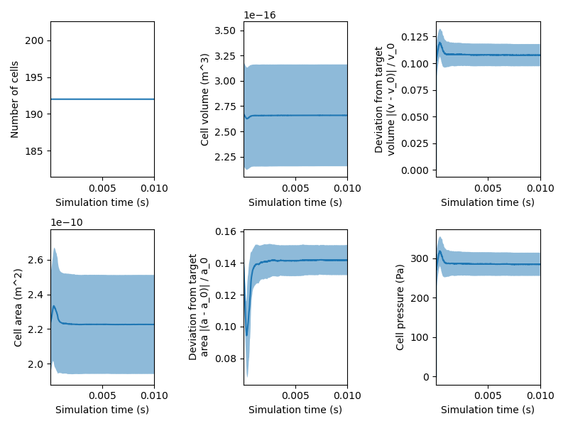
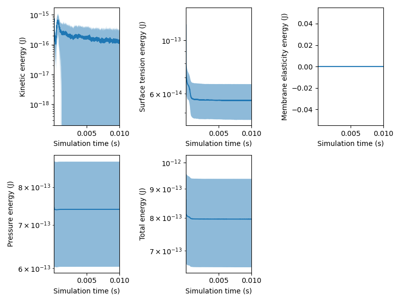

Visualization#
SimuCell3D writes its results as legacy VTK meshes and CSV tables
(Output files). This chapter shows how to view the meshes in ParaView and
how to plot the statistics CSV with the script shipped in scripts/data_plotting/.
Viewing meshes in ParaView#
ParaView reads the output meshes without conversion. Any recent version works; the steps below use menu names that have been stable for many releases.
Opening a run#
File > Open, go to
<output folder>/cell_data/. ParaView groupsresult_1.vtk,result_2.vtk, … into one entry,result_..vtk. Open the group, then click Apply.The time controls in the toolbar now step through the files: file \(n\) is shown as time step \(n-1\). To convert to simulation time, multiply by the
sampling_periodof the run (see When mesh files are written).Choose an array in the colouring drop-down, for example
cell_pressureorcell_volume. Cell arrays colour each cell uniformly.
Open <output folder>/face_data/ in the same way to look at individual faces: colour by
face_type_id to see apical, lateral and basal faces, or by face_surface_tension. The node
arrays of the face meshes (node_is_coupled, nb_coupled_node, mean_curvature, written
with contact model 2) show where cells are coupled to their neighbours.
Useful arrays#
Question |
File |
Array |
|---|---|---|
Which cell class is each cell? |
|
|
Is a cell compressed or stretched? |
|
|
Which cells are about to divide? |
|
|
Which faces are apical, lateral, basal? |
|
|
Where are cells in contact? |
|
|
Mesh quality |
|
|
Looking inside a tissue#
Most interesting cells are hidden inside a tissue. Three filters help:
Threshold on
cell_type_idkeeps only the cells of one class, for example only the epithelial cells (range 0 to 0) without the ECM and lumen cells that enclose or fill a vesicle.Clip with a plane cuts the tissue open. With Crinkle clip checked, whole cells are kept or removed instead of being cut, which keeps their surfaces closed.
Extract Selection isolates selected cells: select them with the Select Cells On tool, then apply the filter.
To follow one cell over time, note its cell_id and use Threshold on cell_id. Cell
identifiers are stable during a run; after a division the two daughters have new identifiers.
Saving images and animations#
File > Save Screenshot saves the current view; File > Save Animation writes one image per time step, or a video, over the whole series. For long runs with many files, open only a subset (select the files individually in the Open dialog) to keep ParaView responsive: each file of a large tissue is tens of megabytes of text.
Tip
ParaView’s Python shell (View > Python Shell) and the pvpython program can script the steps
above, for example to render the same view for every output file of several runs.
Plotting the statistics CSV#
scripts/data_plotting/plot_data.py reads simulation_statistics.csv from an output folder
and writes two figures into the same folder. It needs pandas, matplotlib, numpy and
tqdm:
$ pip install pandas matplotlib numpy tqdm
$ python3 scripts/data_plotting/plot_data.py simulation_results/simulation_vesicle
The argument is the output folder, not the CSV file. The script writes:
sim_geometry_data.pngNumber of cells, mean cell volume, mean relative deviation from the target volume \(|V - V_0|/V_0\), mean area, mean relative deviation from the target area, and mean pressure, each against simulation time. The shaded bands show one standard deviation over the cells.
sim_energy_data.pngMean kinetic, surface tension, membrane elasticity, pressure and total potential energy per cell against simulation time, most on a logarithmic axis.

cells (constant at 192), cell volume, deviation from target volume, cell area, deviation from target area and cell pressure (about 285 Pa), each mean with a shaded band of one standard deviation.#
sim_geometry_data.png written by plot_data.py for the tube example
(parameters_tube.xml, 192 cells, 1e-2 s) with 2.1.0. The shaded band is one standard
deviation over the cells. The tube settles within about 1 ms and then stays at constant
volume, area and pressure.

elasticity, pressure and total energy per cell, mean with a shaded band of one standard deviation; the membrane elasticity panel is flat at zero.#
sim_energy_data.png for the same run. The energies level off after the first millisecond.
The membrane elasticity energy is 0 because area_elasticity_modulus is 0 in the tube file.
The statistics CSV has one row per cell, written every 50 iterations, so the curves have one
point per 50 iterations regardless of sampling_period. All cell classes are averaged
together; to plot one class only, filter on type_id first (see
Reading the statistics CSV).
Note
The output folder, including these figures, is deleted when the same parameter file is run again. Copy the figures elsewhere if you want to keep them.
Diagnostics CSV#
performance_diagnostics.csv is a plain CSV table with one row per 100 iterations. Plot it
with any tool, for example the number of cells (cells) and the safeguard counter
(unstable_cells_removed) against iteration, or the per-phase timings to see where a run
spends its time. The columns are described in
Diagnostics CSV.
See also
Output files: the arrays and columns used above.
Input meshes: using ParaView to build input meshes.